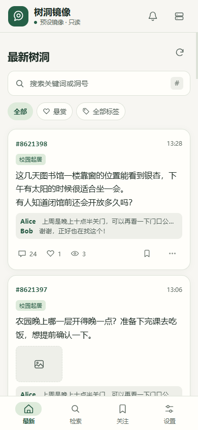

2026-11-24 · mirror_mobile/main · 首版工作区，尚无提交。
沿用网页端熟悉的洞号、正文、标签、评论和关注入口。移动端用单栏信息流与独立详情页，保留返回位置，支持系统深色模式和扩大字号。
| 需求 | 验收 | 状态 |
|---|---|---|
| REQ-01 独立镜像源 | 预置同学部署的源，可填 API 根地址并切换，保存前测试。 | requested |
| REQ-02 浏览与检索 | 列表、评论、洞号和关键词定位、来源支持的筛选、图片及只读信息。 | requested |
| REQ-03 只读使用 | 浏览使用镜像 GET 接口。收藏和浏览历史由手机本地保存。 | requested |
DEC-01 · Kotlin 原生容器承载随 APK 分发的界面，原生 GET 传输处理镜像跨域。Android 是本次构建目标。
DEC-02 · 镜像兼容 API 优先提供帖子、评论与筛选。服务公布独立检索能力时，界面提供该能力。

| 需求 | 实现 | 验证 |
|---|---|---|
| REQ-01 | API 能力识别与原生只读传输 | 接口单元测试、Chromium 模拟 REST 源切换和重启后恢复。 |
| REQ-02 | 阅读与检索页面 | Chromium 交互测试覆盖列表、标签、评论分页、排序、引用、洞号定位、日期及缺图。预设源联调覆盖列表翻页、关键词、标签、详情、评论、消息及单日时间范围。 |
| REQ-03 | 按源保存本地状态 | Chromium 交互测试覆盖关注、分组、历史、深色模式和镜像隔离。 |
Android 调试 APK 构建与 Lint 检查通过。APK v2 签名有效，包内界面文件与通过 Chromium 测试的源文件一致。
本机没有连接 Android 设备，系统分享、手势返回和 WebView 内的网络连接需要设备验证。
预设镜像的近期日期范围返回正常。一项截止于 2000 年的查询连续超时，客户端会显示请求失败并允许重试。
2026-11-24 · 确定单栏阅读和镜像源配置。接入 V3 与可选 REST 能力并完成浏览器交互测试。